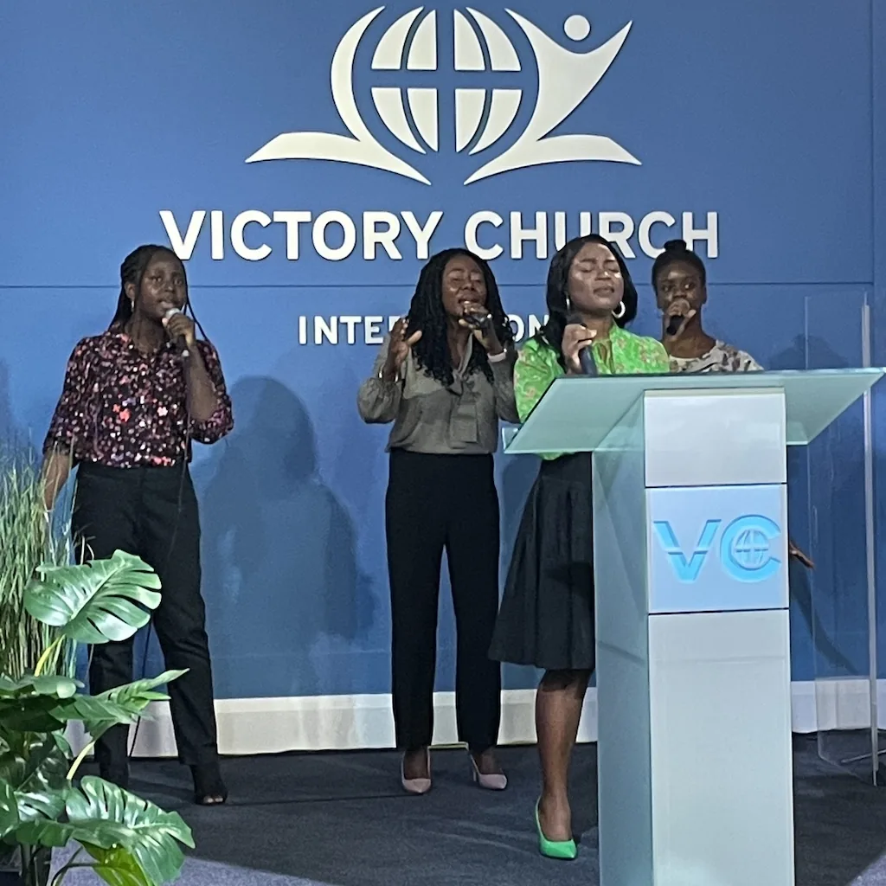
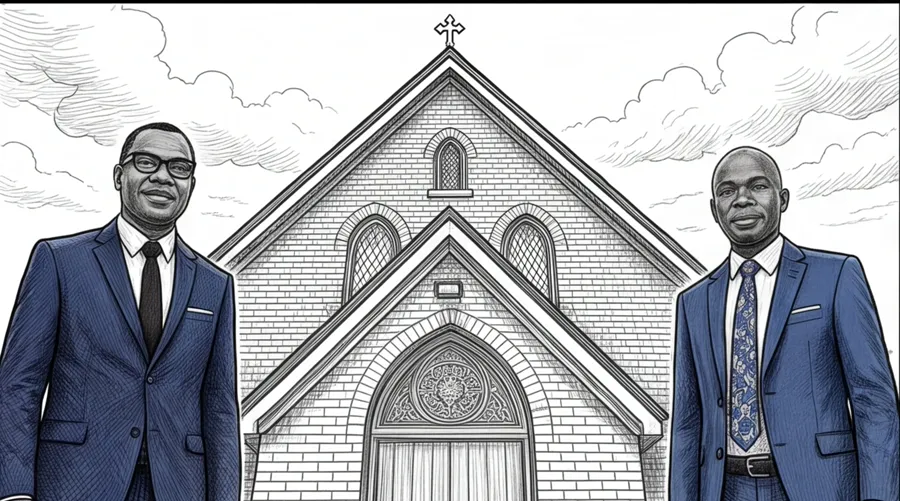
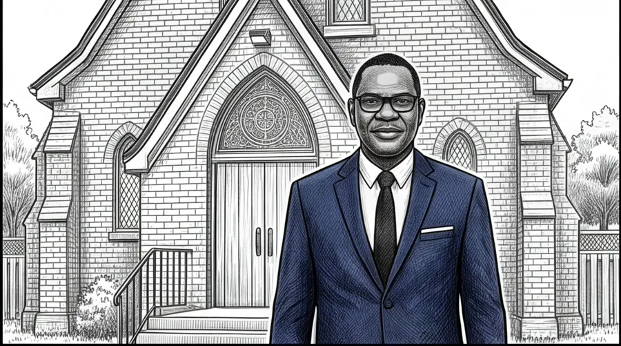
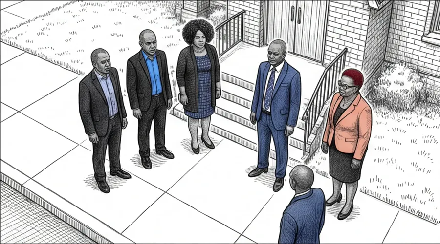
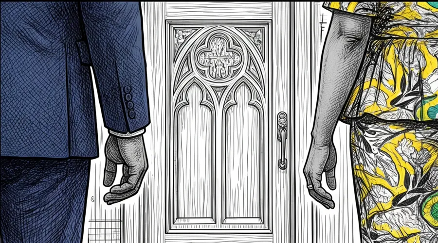
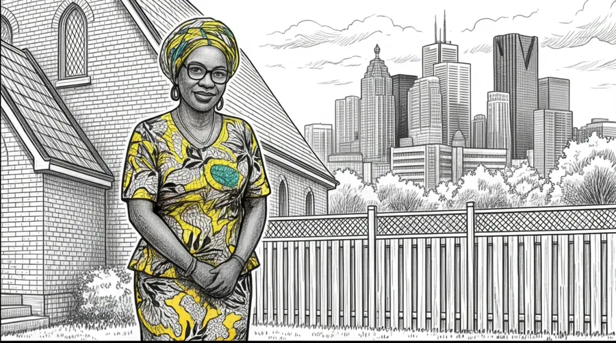
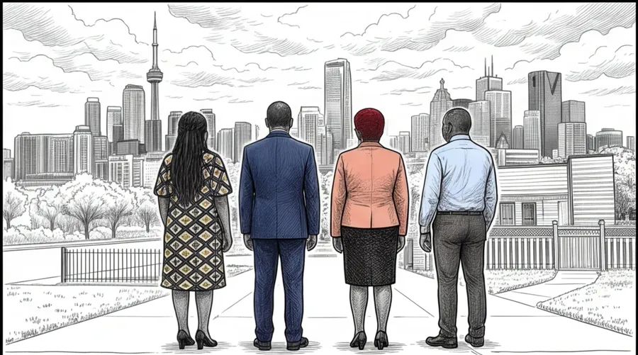

Pastor Felix founded Victory Church International in 2006, with five people in his living room. He is a licensed and ordained preacher, and he hosts Victory Life TV, which is broadcast on yesTV and archived on the church's YouTube channel. He was raised and educated in Nigeria and came to Canada at twenty one.
Est. 2006 Non denominational and multicultural
North York, Toronto
Love God.
Love People. Pray.
We began in 2006 with five people in a living room in Toronto. Today we are a congregation drawn from every nation, meeting in a sanctuary that has held worship since 1856.
A drawing of our congregation. The people in it stand for the nurses, pharmacists, doctors, teachers and lawyers who fill this church on a Sunday. Point at any of them.
01 Welcome
We are glad you are here
In today's world, people wrestle with getting through life because the struggles with fear, anxiety and lack seem to be mounting daily. Here at Victory Church we share a message of encouragement, freedom and victory that is already ours, through Jesus Christ.
As you get to know us, you'll see that we are a prayerful and thankful body of believers who serve others and pray for you, our congregation, our community, and for peace in Canada and around the world. Thank you for visiting us here, and if you are in Toronto, we welcome you to visit us in person. At Victory Church you will discover a friendly church home to Love God. Love People. Pray.
Pastor Felix Ayomike
Lead Pastor, Victory Church International
Thou shalt love the Lord thy God with all thy heart, and with all thy soul, and with all thy mind. This is the first and great commandment. And the second is like unto it, Thou shalt love thy neighbour as thyself.
Matthew 22:37-39
02 What happens here
What a Sunday looks like
Two hours of worship, teaching and prayer
Doors open before 10:30. There is singing led by our choir and worship team, teaching from the Bible that you can use on Monday morning, and time given to prayer. Children go to their own classes after the singing.
- No dress code. Come exactly as you are.
- You will not be singled out or asked to stand up.
- Children's church for ages 3 to 12.
- Youth Bible study Sundays and Wednesdays.

Next service Sunday, 10:30 a.m. Services on YouTube
Ministries
A place for every part of the family
Our ministries are led by people who work full time as nurses, pharmacists, teachers, lawyers and engineers, and who give their evenings and weekends to this church.
- Men's Ministry. Purposeful friendship and accountability.
- Women's Ministry. Study, service and discipleship.
- Youth. Bible study, retreats, summer mission trips.
- Children. Ages 3 to 12, lessons, music and games.

Outreach
StepUp, and partners in three countries
Every week volunteers pack and hand out food and household supplies across the Greater Toronto Area through StepUp Community Support. Overseas we work with pastors in Nigeria and the Philippines on orphan care, schooling and skills training for young people.
- Weekly food and supply distribution in the GTA.
- Counselling and mentorship alongside the food.
- Orphan, senior and family support abroad.
- Vocational and life skills training for youth.

03 Our history
The long way home
In the 1800s missionaries carried Christianity from Britain into West Africa. In 2006 a Nigerian pharmacist started a church in his living room in Toronto. Ten years later that church walked through the door of a building the Anglicans had raised in 1856.






1856
Weston, Canada West
Anglicans in the village of Weston build a small red brick church, with pointed arch windows and a cross set on the gable. At the time, Britain is sending missionaries in the other direction, into West Africa.
01 / 09
Drag to turn
2006Founded in a living room with five people
1856The year our sanctuary was first built
13Ministry leaders serving alongside full time careers
3Countries where we support local pastors and children
04 What we believe
Ten convictions, plainly held
We are non denominational and charismatic. We believe the gifts and power of the Holy Spirit did not stop with the first century, and that they are available to believers today.
01
God who hears
God the Father is infinite and personal, perfect in holiness, wisdom, power and love. He hears and answers prayer.
02
Jesus Christ
His deity, virgin birth, sinless life, miracles, atoning death, bodily resurrection, ascension, and his return in power and glory.
03
The Holy Spirit, today
His present ministry enables believers to live godly lives. His power and his gifts are available to believers now.
04
Scripture
The Bible is the only inspired, infallible and authoritative Word of God.
06
Salvation by grace
The shed blood of Christ is the sole basis for the forgiveness of sin. Salvation comes through faith in his death and resurrection.
10
The Blessing of Abraham
We believe the blessing of Abraham brings abundant life, and that this includes salvation, healing and provision.
05 Our team
Thirteen leaders, and thirteen day jobs
Read the roster and you read the congregation. Doctors, nurses, pharmacists, lawyers, professors and business owners, most of whom came to Canada from somewhere else, and all of whom serve this church around a full working week. Open any of them to see what their ministry does, and to get in touch.
The Men's Ministry meets for purposeful friendship and accountability, alongside the work of the church leadership team.
Handles the day to day administration of the church.
Media Technology looks after recording, streaming and the church's YouTube channel. The Youth ministry runs Bible study on Sundays and Wednesdays, along with retreats, service projects and summer mission trips.
The Women's Ministry meets for study, service and discipleship.
The Music Ministry leads the singing on a Sunday morning, through the choir and the worship team.
The Women's Ministry meets for study, service and discipleship.
Outreach runs StepUp Community Support: weekly distribution of food and household supplies across the Greater Toronto Area, with counselling and mentorship offered alongside.
Media Technology looks after recording, streaming and the church's YouTube channel.
Children's church runs for ages 3 to 12 during the Sunday service, with lessons, music and games.
06 Outreach
Love God. Love people. Then go and prove it.
Our neighbourhood sits in one of the most diverse and most pressured corners of Toronto. The work below is what our mission statement looks like on a Tuesday.
Greater Toronto Area
StepUp Community Support
Weekly distribution of food and household supplies, with counselling and mentorship offered alongside, to meet the tangible needs of people in our local community.
stepuptoserve.com
Nigeria and the Philippines
Partners on the ground
We work with local pastors on church planting and discipleship, and support orphans, seniors and families with food, clothing, schooling and skills training for young people.

Next
Where we are heading
We intend to extend this work to Ghana, Sudan, Sierra Leone, Jamaica, Haiti, and to First Nations communities here in Canada.
07 TV Ministry
Victory Life on yesTV
Victory Life
A TV ministry where people around the world receive life-giving encouragement, inspiration and hope to grow their faith.
This ministry was birthed from our desire to love one another by sharing the greatest story ever told, using the strongest media available: television.
Together we are sharing hope with a hurting world who need to know they are loved, set free, healed, and empowered to live a life of victory in Jesus.
With Pastor Felix Ayomike, on yesTV
It is our privilege to share the Gospel of Jesus, but we know that taking it to the world is costly.
Seven Days
of Prayer
A free guide
Victory Church International
North York, Toronto
08 A gift for you
Seven Days of Prayer
A free guide with one page for every day of the week. Written for people who want to pray but are not sure how to begin. Tell us where to send it and it is yours.
- Seven short readings, one for each day.
- A prayer to pray and a line of scripture to hold.
- Free, with nothing to pay and nothing to join.
Thank you
09 Visit us
You are welcome this Sunday
Come as you are. There is no dress code, nobody will single you out, and you can sit at the back and just watch if that is what you need.
Sunday service
10:30 a.m. to 12:30 p.m.
Address
Unit 8, 2400 Finch Ave West
North York, ON M9M 2C8
Parking in the complex is difficult. We advise people to park in the plaza by the Shell gas station.
Give
Every bag of food began as somebody's offering
Your giving supports the weekly food distribution here in Toronto, and orphan care, schooling and skills training for young people in Nigeria and the Philippines.